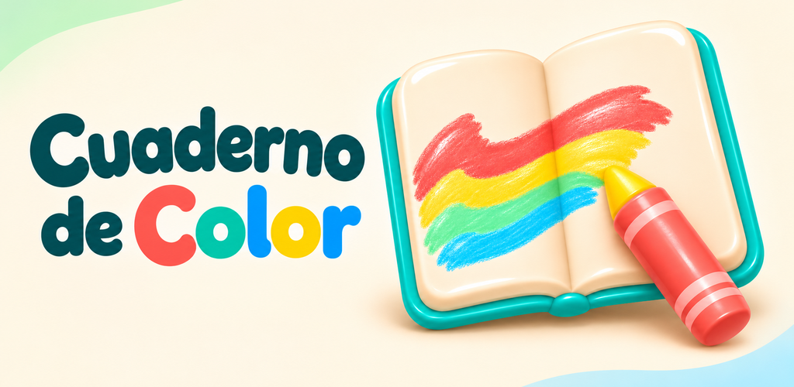

ANDROID · APLICACIÓN EN PRUEBAS
Un cuaderno para jugar con los colores.
Dibujos de formas grandes y actividades sencillas para que los peques prueben, pinten y creen a su ritmo.
Diez formas de jugar
Colorear, pintar por números, píxeles, dibujo libre, simetría, rascar, repasar contornos, neón, unir puntos y actividades de temporada.
El cuaderno se queda en tu dispositivo
Las obras y el progreso se guardan localmente. La sincronización opcional utiliza Juegos guardados de Google Play Games y el espacio de datos de la aplicación en Google Drive. Puedes seguir usando el cuaderno sin cuenta.
Los servicios de Google pueden reconocer un perfil de Play Games al abrir la app. Iniciar sesión y activar la sincronización son opciones separadas. Los dibujos sin cuenta se importan mediante una acción específica.
El juego sigue en pruebas. El guardado se ha probado con una cuenta adulta; el uso supervisado con Family Link y la recuperación entre dispositivos siguen pendientes de validación.
Información para familias
El modelo previsto ofrece una actividad gratuita por categoría o colección, sin límites de repetición y con todas sus herramientas. El catálogo actual se desbloquea con una compra única prevista de 14,99 € en España, sin suscripción. El precio definitivo y su disponibilidad se muestran en Google Play. La compra todavía está pendiente de activación y pruebas. No se incluyen anuncios. El área para padres reúne la cuenta, la sincronización, el idioma y el límite diario opcional. Las compras y el guardado en Google deben gestionarlos las personas adultas responsables.
Cómo se tratan y conservan los datos · Condiciones de uso de la versión en pruebas